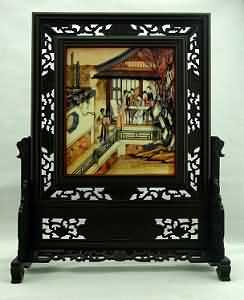
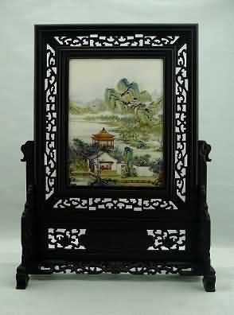
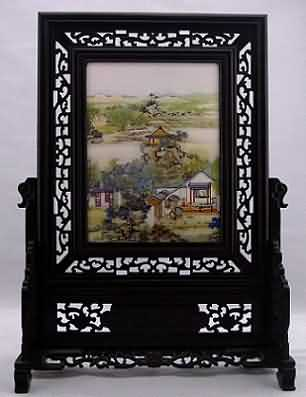

陈枚 字载东，号殿抡，晚号枝窝头陀，娄县（今上海市松江）人。画初学宋人，折衷于唐寅，参以西洋法，能于寸纸尺缣，图群山万壑，以显微镜照之，峰峦林木，屋宇桥梁，往来人物，色色俱备，其用笔之妙，与巨幅同。雍正四年（1726）以供奉内廷劳，赏内务府掌义司员外郎衔。乾隆元年（1736）与孙祜等同绘清明上河图，乾隆七年（1742）尝作鸦飞马健图。传世作品有雍正六年(1728)作《寒林图》轴、九年(1731)作《山水图》轴、乾隆七年(1742)作《古树鸦集图》轴著录于《中国书画家印鉴款识》；雍正八年(1730)作《寒林觅句图》轴、乾隆三年(1738)作《月漫清游图册》(十二开)藏故宫博物院；另有《四时佳兴图》册等。
《月曼清游图》描绘的是宫廷嫔妃们一年12个月的深宫生活。笔法精工，面部刻画皆参用西方晕染，设色妍丽，是陈氏人物画代表作。描绘了宫女们随其女主人在庭院内外的游赏活动，主仆之间的关系颇为亲近，主不骄横，仆不卑微，主仆之形大体相近，破除了前人的造型桎梏。文阁刺绣（11 月）：初冬时分，在和煦的阳光下，宫中贵妇们精心绣制和欣赏自己喜爱的图案。
| 山水图卷 |
|
|  |  |
更多定制
|